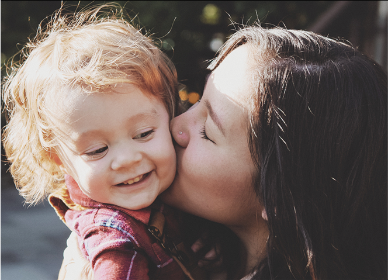

综述
经过20多年的深耕和市场沉淀，益普生中国在以腹泻为主的消化道疾病领域已获得业界的广泛认可。随着国家强化医院药占比、全面取消以药养医、处方外流、以及分级诊疗等诸多政策的开展，医院职能正在发生变化，零售渠道在药品消费中的地位日益重要。我们关注商务和零售渠道的运营，通过最优化的方式直接为消费者提供服务。
 “益普生中国始终将消费者利益放在首位，根据其需求及未来发展趋势对产品及其组合进行布局。”
“益普生中国始终将消费者利益放在首位，根据其需求及未来发展趋势对产品及其组合进行布局。”
高卫，益普生中国多元健康产品零售事业部副总裁

经过20多年的深耕和市场沉淀，益普生中国在以腹泻为主的消化道疾病领域已获得业界的广泛认可。随着国家强化医院药占比、全面取消以药养医、处方外流、以及分级诊疗等诸多政策的开展，医院职能正在发生变化，零售渠道在药品消费中的地位日益重要。我们关注商务和零售渠道的运营，通过最优化的方式直接为消费者提供服务。
“益普生中国始终将消费者利益放在首位，根据其需求及未来发展趋势对产品及其组合进行布局。”
高卫，益普生中国多元健康产品零售事业部副总裁
OTx的商业模式
益普生中国自2015年起，推出全新的OTx（非处方药OTC+处方药Rx）商业模式，将OTC的便利化与处方药的专业化相结合。努力将专业、准确的疾病诊疗知识从医院传递到零售方。公司在商务和零售渠道积极探索、发展创新合作的可能性，以做好承接处方外流的准备，更好地服务于广大消费者。
与药店伙伴实现协同发展
在应对急慢性的胃肠道疾病，如腹泻、便秘时，消费者会更多地在药店购买药品。围绕医药分开和DTP药房迅猛发展的未来趋势，益普生中国与零售渠道的合作伙伴不断摸索创新，帮助药店店员接受专业的技能培训、掌握药品知识，更加主动地、个性化地为消费者提供专业服务。
数字化策略的推动
我们运用新媒体等平台，通过与零售渠道客户的项目合作，主动与消费者沟通疾病和OTC产品的相关信息，帮助消费者获取正确的疾病知识以及建立OTC产品在消费者心目中的形象。未来我们还将诉诸更多数字化手段，包括电商平台，方便消费者及时获取高质量的OTC药品。
益普生集团在胃肠道疾病领域积累了丰富的专业经验，并拥有不断壮大的产品组合。被重新命名的“多元健康产品事业部”已从过去的以医生为中心的基础业务模式转型为覆盖医生处方、药剂师推荐以及患者在医生指导下购买的混合商业模式。从满足患者需求出发，通过提供简便、安全、有效及可获得的疾病诊疗方法，使消费者在治疗方案的选择上拥有更多自主性。我们致力于开发新的疾病解决方案，以尽可能多地改善患者的日常生活，并成为医疗卫生专业人士的关键合作伙伴。
“我们始终以关爱患者健康为己任，针对其需求不断探索创新的服务解决方案。”
庞静妍，益普生中国多元健康产品医院事业部总监
益普生集团自1986年进入肿瘤领域，全球范围内逐步发展出包含前列腺癌、神经内分泌肿瘤、膀胱癌、肾癌、胰腺癌和乳腺癌等具有坚实基础的肿瘤产品。针对这些肿瘤疾病，我们的目标是通过研发高质量、创新的诊疗方案来解决未被满足的疾病需求，在提升疾病诊疗水平的同时，为患者提供有针对性的治疗方案以及支持服务。
中国目前已上市的肿瘤产品主要涉及前列腺癌等领域。未来在中国市场鼓励抗肿瘤创新药的有利政策趋势下，益普生将会引进更多的新药服务于广大患者。
“我们始终为促进肿瘤的规范化诊疗、改善患者生活质量而砥砺前行。”
黄慕淇，益普生中国专科产品事业部副总裁
多年来，益普生集团一直在罕见病领域深耕，努力为患者提供创新的治疗方案，来解决其未被满足的疾病治疗需求。我们通过研发新药和对疾病知识的持续教育以帮助早期诊断，从而帮助降低误诊和延误治疗的风险。我们坚信不久的未来，益普生集团会为罕见病患者提供更多的医疗价值。
“我们始终为促进肿瘤的规范化诊疗、改善患者生活质量而砥砺前行。”
黄慕淇，益普生中国专科产品事业部副总裁
益普生集团在神经科学和毒素方面，拥有超过25年的临床经验。未来我们将积极努力为中国患者带来更多该领域的疾病解决方案。